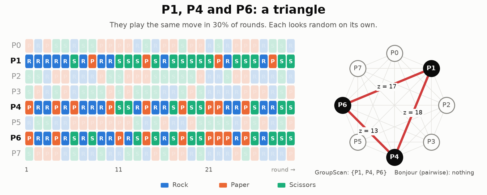

Beyond Pairs: Detecting Colluding Groups of Agents from Their Moves
As part of committing myself to more independent research, I took part in Apart Research's AI Collusion Research Sprint.
With LLM agents now making their way into production systems, we set out to detect collusion in a multi-agent game using only the moves the agents make. For instance, in Rock Paper Scissors:

Prior statistical methods only detect colluding pairs. Our approach extends them to detect a colluding subset of any size in a game of n agents.